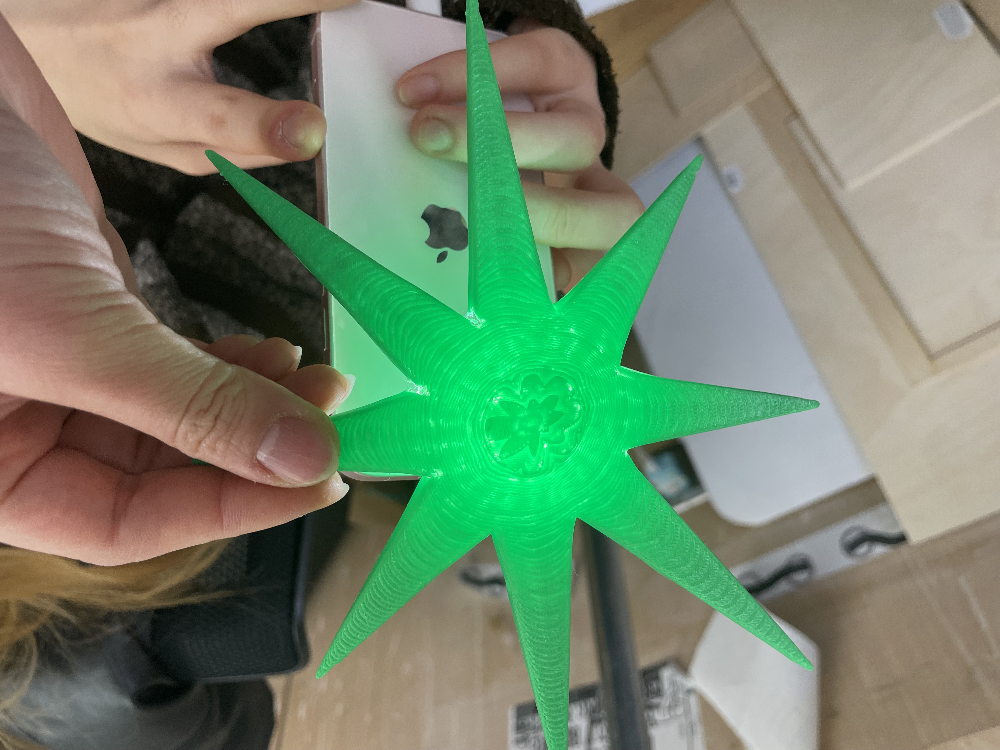
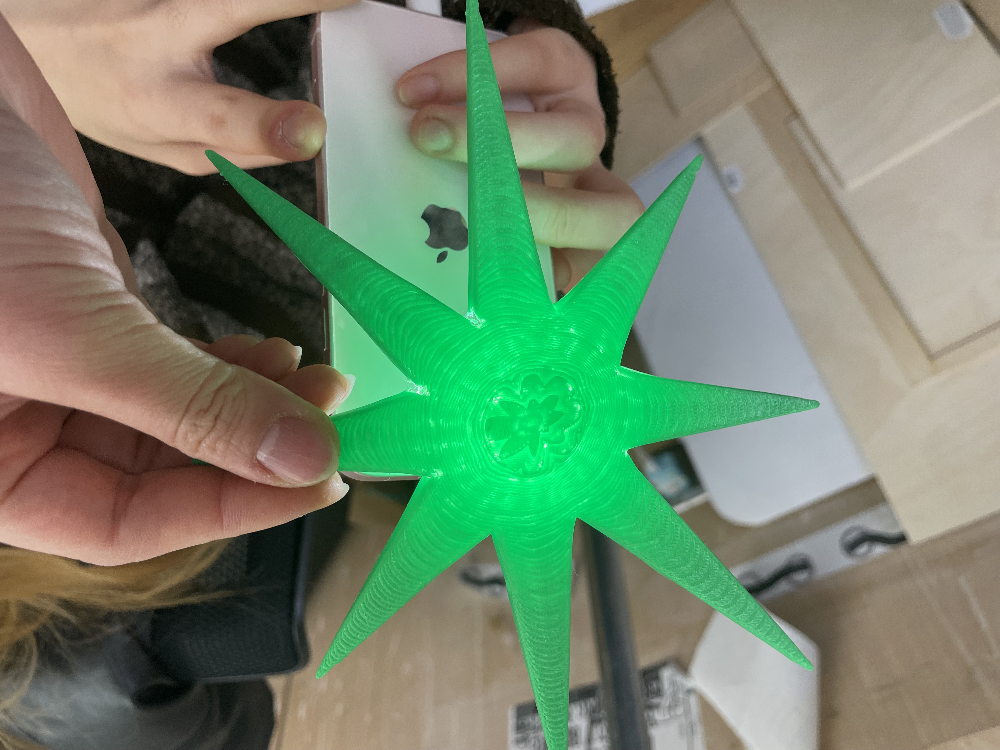
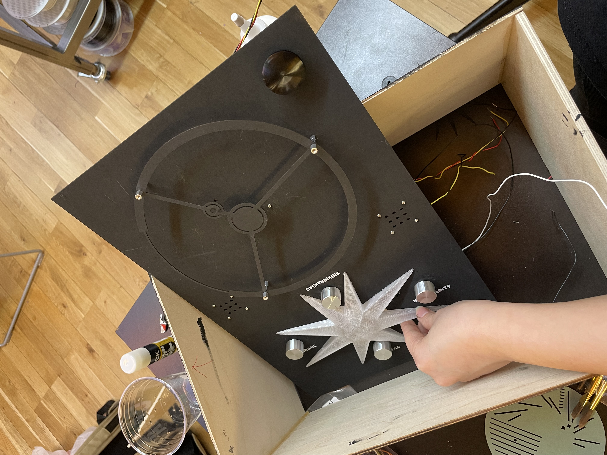
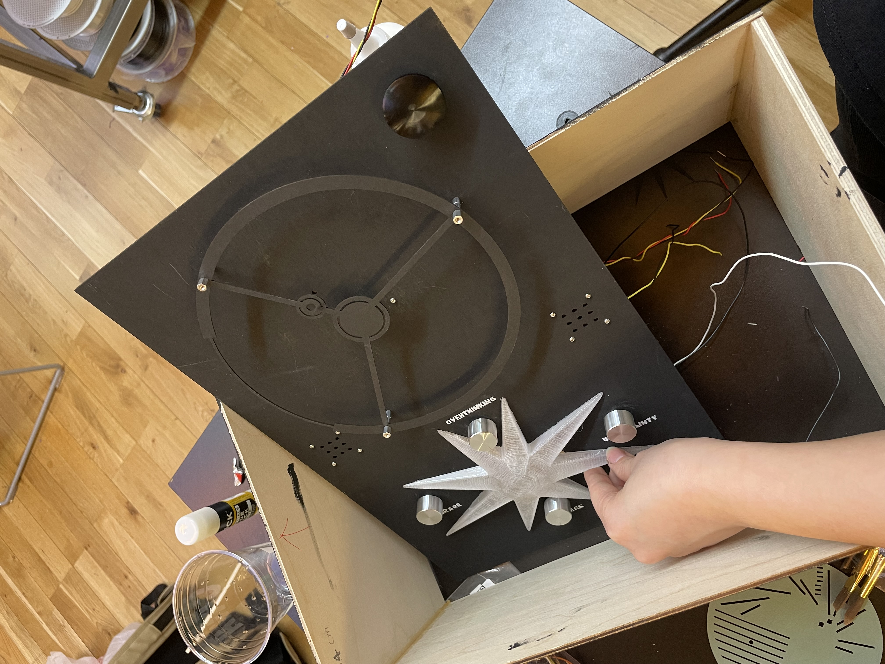

Personal Project
"Alchemy of Destiny" is an interactive installation that asks participants to explore their relationship to prediction and uncertainty. The work uses a stepper motor, potentiometers, and a layered disc mechanism to turn fortune telling into a mechanical ritual. Participants press a button to spin the discs, then adjust knobs to express their current emotional or psychological state. These inputs generate a fortune, which is revealed through a small OLED screen only when the apertures realign. The project emphasizes the ambiguity of destiny and the desire to glimpse the future, even when it remains unclear. By hiding and revealing messages through unstable mechanical alignments, the installation invites playful interaction while reflecting on the strange mix of curiosity, belief, and skepticism that shapes how we search for meaning.
During the exhibition, participants were asked to stamp how relatable the fortune-telling sentence felt to them. They could choose from four different icons. During the exhibition, participants were asked to stamp how relatable the fortune-telling sentence felt to them. They could choose from four different icons. These responses were collected through a short question designed for data visualization, allowing participants’ emotional reactions to be visually mapped. As they adjusted the knobs and took time to reflect on their feelings, many participants felt heart-warmed by the encouraging words inside the box. Because the interaction was time-limited, some participants quickly made up their minds and waited for the roulette to stop. Others ran out of time and were unsure about their feelings, but they often reacted more strongly and felt especially heart-warmed after seeing the final outcome.
The concept of this project began with my personal feelings of having an unclear and blurry future. I spent a long time reflecting on questions about my destiny and what might lie ahead. Rather than seeking definitive answers, I became interested in the act of contemplation itself. As a result, I wanted to create a device that allows participants to privately reflect on their own state of mind and receive a form of feedback about their destiny. The project is not meant to predict the future, but to offer a quiet moment for self-reflection through interaction.
The four potentiometers in the installation reference the structure of saju (Korean Four Pillars of Destiny), which is traditionally composed of four elements representing the year, month, day, and time of birth. Rather than translating these elements literally, the knobs symbolically invite participants to consider multiple layers of their current emotional and psychological state, mimicking the way saju frames destiny through interconnected variables.
Fabrication Process Records
 

 
